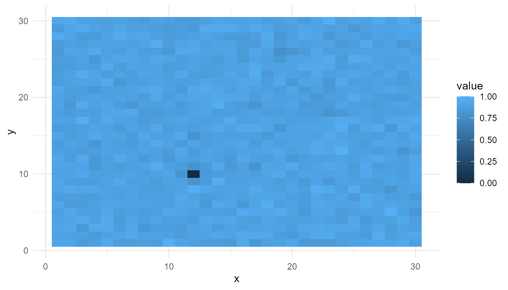

Emergence, Life, and Consciousness
Source:vignettes/emergence-life-consciousness.Rmd
emergence-life-consciousness.RmdPurpose
This article connects emergenceModelR to broader
questions about life and consciousness. Emergence is often used to
explain how organized biological and cognitive systems arise from
interactions among simpler components (Kauffman
1993; Maynard Smith and Szathm’ary 1999; Deacon 2011).
The goal is not to claim that emergence fully explains life or consciousness. Rather, the goal is to show why emergence is a useful conceptual bridge between origin-of-life research, complexity science, cognitive science, and consciousness studies.
The guiding question is:
How can local interactions among simpler components give rise to organized systems with higher-level properties?
Why emergence matters for life and consciousness
Life and consciousness are both difficult to explain using only isolated components.
A living cell is not explained merely by listing its molecules. Its living organization depends on metabolism, boundary maintenance, feedback, regulation, reproduction, and interaction with the environment.
Similarly, consciousness is not explained merely by listing neurons. Conscious cognition appears to involve coordinated activity across attention, perception, memory, embodiment, integration, and reportability.
In both cases, the problem is not only the parts. The problem is the organization of the parts into a functioning whole.
This is why emergence is relevant. Emergence draws attention to interactions, constraints, feedback loops, and system-level organization.
Emergence and life
Origin-of-life research often asks how chemical systems became organized, self-maintaining, and evolvable. This transition is not simply a matter of having the right molecules. It also requires the right forms of organization.
Several ideas are often discussed in emergent terms:
- self-organization: chemical or physical order arising without central control;
- autocatalysis: reaction networks that reinforce their own production;
- compartmentalization: boundaries that create inside/outside structure;
- information-bearing molecules: systems capable of heredity and variation;
- metabolism-like dynamics: organized flows of energy and matter;
- evolvability: the capacity for variation, selection, and inheritance.
These are not separate from emergence. They are examples of how organized behavior may arise from interacting components.
However, emergence does not remove the need for mechanisms. To say that life emerged is not enough. A strong explanation must specify how molecules interacted, how boundaries formed, how energy flowed, how information was preserved, and how selection became possible (Kauffman 1993; Maynard Smith and Szathm’ary 1999).
Emergence and self-maintenance
A key feature of life is self-maintenance. Living systems are not static structures. They maintain themselves through ongoing activity.
A cell, for example, must preserve its boundary, regulate its internal conditions, process energy, repair damage, and interact with its environment. This kind of organization is dynamic rather than fixed.
Emergence is useful here because it helps explain how a system can have properties that are not found in isolated parts. A single molecule is not alive. But a network of molecules, reactions, boundaries, and energy flows may form a self-maintaining system.
This is one reason origin-of-life research often focuses on networks, feedback, and organization rather than on isolated molecules alone.
Emergence and consciousness
Consciousness is also often discussed in emergent terms. Some theories propose that conscious access arises from large-scale integration, global broadcast, recurrent processing, attention, or system-wide availability (Dehaene 2014; Chalmers 1996).
However, the phrase “consciousness is emergent” must be used carefully. By itself, it does not explain consciousness. It only states that consciousness depends on lower-level organization in a way that requires multi-level explanation.
A stronger emergent explanation of consciousness must identify:
- the relevant lower-level components;
- the interactions among those components;
- the system-level pattern that arises;
- the conditions under which the pattern appears;
- why that pattern is associated with conscious access or experience.
This is why emergence is helpful but not sufficient. It frames the problem, but it does not solve it automatically.
Access consciousness and phenomenal consciousness
The relevance of emergence depends partly on what aspect of consciousness is being explained.
If the target is access consciousness, emergence may help explain how information becomes available for report, memory, reasoning, and action. Global workspace and broadcast models are examples of this kind of explanation.
If the target is phenomenal consciousness, the problem is harder. Phenomenal consciousness concerns subjective experience: what it feels like from the inside. Explaining how system-level organization gives rise to subjective experience remains a major philosophical challenge (Chalmers 1996).
This distinction matters because emergent explanations are often stronger for functional organization than for subjective experience.
Life, consciousness, and organization
Life and consciousness are not the same phenomenon, but both raise questions about organization.
| Domain | Lower-level components | Higher-level pattern |
|---|---|---|
| Origin of life | molecules, reactions, membranes | self-maintaining, evolvable systems |
| Complex systems | agents, cells, nodes, rules | collective dynamics and organization |
| Consciousness | neurons, networks, cognitive processes | attention, access, integration, experience |
In each case, the higher-level pattern depends on lower-level interactions. But the higher-level pattern is not obvious from the components in isolation.
This is the central reason emergence is important: it helps explain why organization matters.
Relation to emergenceModelR
emergenceModelR provides toy models for exploring
different pathways to emergent organization.
| Function | Relevance to life and consciousness |
|---|---|
simulate_cellular_automata() |
Shows how simple local rules can create complex global patterns |
simulate_self_organization() |
Shows how feedback and diffusion can generate spatial organization |
simulate_agent_interactions() |
Shows how local behavior can produce collective dynamics |
simulate_network_growth() |
Shows how local attachment rules can generate global network structure |
measure_emergence() |
Provides simple summaries of diversity, entropy, and change |
These functions do not model life or consciousness directly. They provide simplified mechanisms that help learners think about organization, interaction, and system-level pattern formation.
Example bridge model: network growth
Networks are useful bridge models because both biological and cognitive systems depend on relations among components.
In origin-of-life research, reaction networks and autocatalytic sets are important because molecules interact through structured pathways. In consciousness studies, neural and cognitive networks matter because information processing depends on connectivity, integration, and communication.
The following example shows how a global network structure can emerge from a local attachment rule.
net <- simulate_network_growth(
n_nodes = 40,
mode = "preferential",
seed = 9
)
final_degrees <- subset(
net$degree_history,
step == max(step)
)
summary(final_degrees$degree)
#> Min. 1st Qu. Median Mean 3rd Qu. Max.
#> 2.00 2.00 3.00 3.85 4.25 11.00Interpretation of the bridge model
The network example shows how system-level structure can arise from repeated local rules. No central planner creates the network hubs. They emerge from the growth process.
This is relevant to life and consciousness because many organized systems depend on connectivity. Reaction pathways, ecological relationships, neural networks, and communication systems all depend on how components are connected.
The model does not represent a real biochemical or neural network. Its purpose is conceptual: it illustrates how local interaction rules can generate higher-level structure.
Example bridge model: self-organization
Self-organization is another bridge concept. It is relevant to pattern formation in physical, chemical, biological, and cognitive systems.
so <- simulate_self_organization(
grid_size = 30,
steps = 50,
diffusion = 0.20,
feedback = 0.60,
seed = 3
)
so_final <- subset(so, step == max(step))
plot_emergence_sim(
so_final,
x = "x",
y = "y",
value = "value",
type = "raster"
)
Interpretation of self-organization
The final pattern was not imposed from outside. It developed through repeated local updating. This illustrates how structured organization can arise without a central controller.
For origin-of-life thinking, this helps illustrate how prebiotic systems might develop organized dynamics before modern biological control systems existed. For consciousness studies, it helps illustrate how large-scale patterns may arise from distributed interactions.
Again, the model is not a direct simulation of life or mind. It is an educational abstraction.
Emergence as a bridge, not a solution
Emergence is powerful because it connects levels of explanation. It helps explain how local interactions can produce system-level organization.
However, emergence should not be used as a vague replacement for explanation. Saying “life emerged” or “consciousness emerged” is only the beginning. A stronger explanation must specify:
- what the components are;
- how they interact;
- what constraints shape them;
- what feedback loops are present;
- what higher-level pattern appears;
- why that pattern matters.
This is especially important for consciousness. An emergent explanation must still address whether it explains functional access, subjective experience, or both.
Weak emergence and responsible interpretation
The models in emergenceModelR illustrate weak emergence.
They show how global patterns can arise from local rules and
interactions, even when the resulting pattern is difficult to predict in
advance.
They do not prove strong emergence. They do not show that higher-level properties have irreducible causal powers. They also do not show that life or consciousness can be fully explained by simple simulation.
A careful interpretation is:
These models illustrate how organized patterns can arise from local interactions.
An overstatement would be:
These models explain life and consciousness.
The first statement is appropriate. The second is not.
Why this matters for a portfolio
emergenceModelR complements origin-of-life and
consciousness modeling projects because it provides the conceptual
bridge between them.
A coherent portfolio could be understood this way:
| Project | Main focus | Conceptual role |
|---|---|---|
lifesimulatoR |
Origin-of-life simulations | How life-like organization may arise |
consciousnessModelR |
Consciousness theory simulations | How access, attention, broadcast, and integration can be modeled |
emergenceModelR |
Emergence and complexity simulations | How local interactions generate higher-level organization |
Together, the projects show a consistent intellectual theme: the study of organized systems across levels.
This is stronger than a collection of unrelated coding projects. It shows a research-oriented portfolio around emergence, life, consciousness, complexity, and educational simulation.
What the package captures
The package captures several ideas relevant to life and consciousness:
- local rules can generate global patterns;
- feedback can create organized structure;
- networks can develop hubs and unequal connectivity;
- agents can produce collective dynamics;
- system-level organization requires interaction, not only components;
- emergence is best understood through multi-level explanation.
These ideas are useful for teaching and conceptual exploration.
What the package does not capture
The package does not provide:
- a full origin-of-life model;
- a full theory of consciousness;
- a biochemical simulation;
- a neural simulation;
- a theory of subjective experience;
- proof that emergence explains everything;
- evidence that artificial systems are conscious.
It is an educational modeling package, not a complete scientific theory.
Educational use
This chapter can support several classroom or self-study questions:
- How does emergence help explain life?
- What does emergence add beyond reductionism?
- Why is organization important?
- Can consciousness be explained as an emergent process?
- What is the difference between explaining access and explaining experience?
- Why is emergence useful but not sufficient?
- How do network growth, self-organization, and agent interaction provide bridge models?
These questions help learners understand emergence as a serious explanatory framework rather than a vague label.
Key takeaway
Emergence provides a conceptual bridge between origin-of-life research, complexity science, and consciousness studies. It helps explain how organized system-level patterns can arise from interactions among lower-level parts.
emergenceModelR does not claim to explain life or
consciousness completely. Its purpose is to make the logic of emergent
organization visible, testable, and teachable through simplified
simulations.